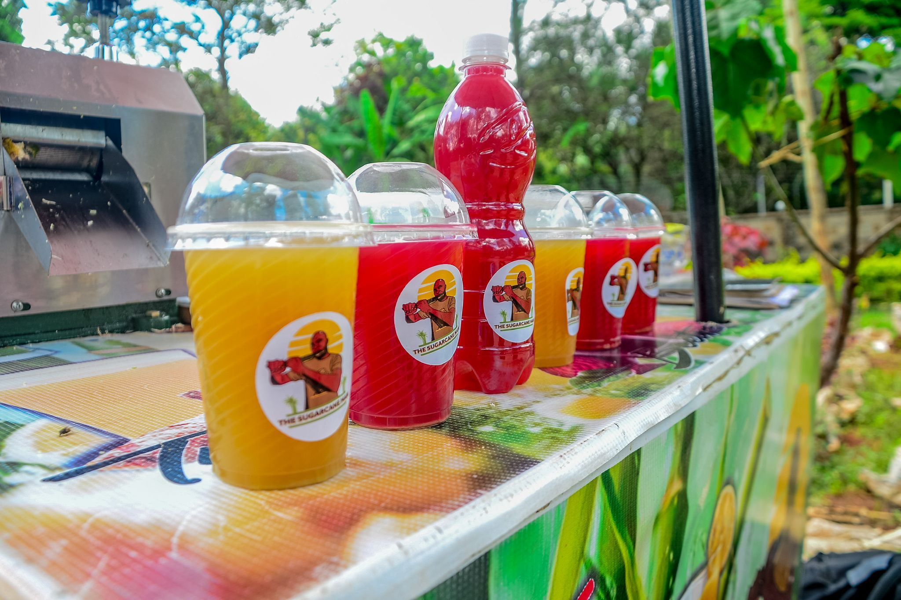
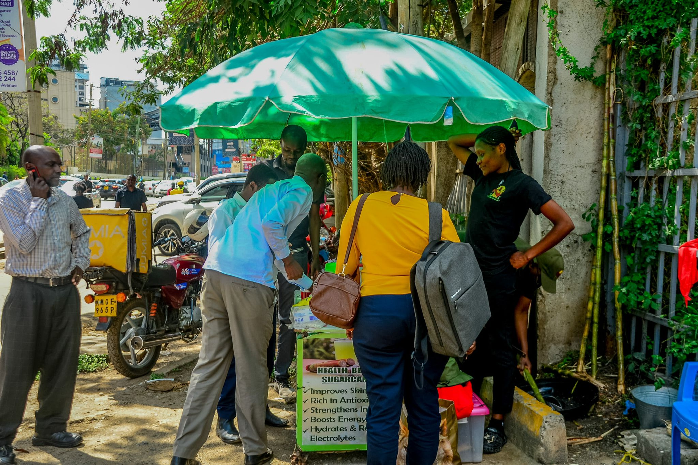

Premium Fresh-Pressed Sugarcane Juice
Delivery: Fresh daily · Chilled · Ready to serve
The Sugar Cane Man is reimagining the journey of sugar cane, from farm to glass. By creating a consistent, ethical supply chain that pays farmers weekly, we’re turning sugar cane into a source of empowerment and sustainability. Each cane pressed is a story of fair trade, youth employment, and local innovation.
Welcome to The Sugar Cane Man
What began as a simple idea to share the naturally sweet and nourishing goodness of fresh-pressed sugarcane juice has grown into a mission that uplifts our youth through employment and brings hope to families across Nairobi.
Nurturing Youth. Empowering Community. One Cup at a Time.
The Sugar Cane Man is more than a beverage business – it is a community-powered social enterprise. Through this initiative, we are creating opportunities for job creation, skills training, entrepreneurial development, self-confidence and financial independence.
